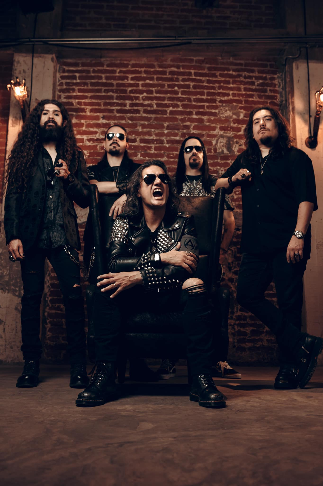
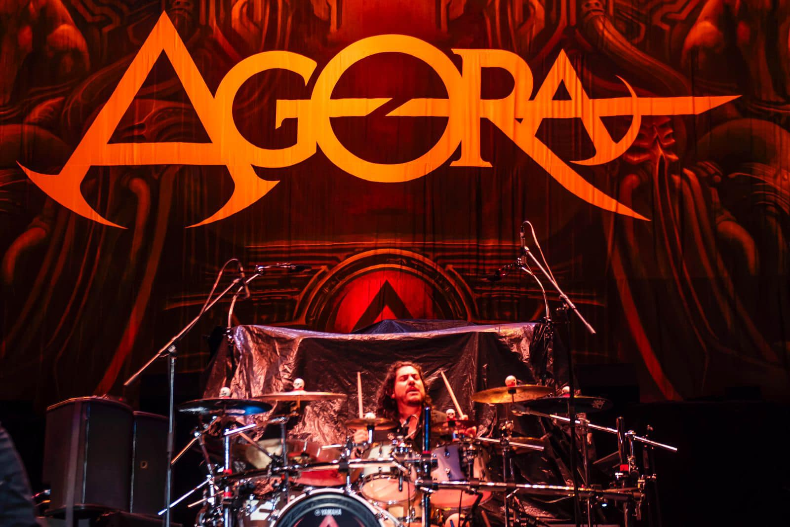

ÁGORA: EL ORIGEN
DE ZONA DE SILENCIO

La legendaria banda de metal progresivo inicia las celebraciones por el XX aniversario de su álbum insignia, Zona de Silencio, liberando por primera vez el demo original en inglés que dio vida al proyecto.
UN VIAJE AL ADN DE LA BANDA
Zona de Silencio, lanzado originalmente en 2005, marcó un antes y un después en la escena progresiva de Latinoamérica. Ahora, con este lanzamiento titulado originalmente "Breaking the Silence", Ágora permite a sus fans asomarse al proceso de composición primigenio.

"Este primer adelanto es un track que nunca nadie escuchó, hasta ahora", compartió la agrupación a través de sus canales oficiales, abriendo las puertas de su archivo histórico.
LO QUE VIENE PARA LA LEGIÓN
Este estreno no es un evento aislado. La banda confirmó que esta es solo la primera de varias entregas especiales para conmemorar las dos décadas del disco.

PRÓXIMAS ENTREGAS: XX ANIVERSARIO
- RAREZAS: Grabaciones de estudio nunca antes publicadas.
- ALTERNATIVAS: Versiones descartadas de sus más grandes éxitos.
- REVERSIONES: Actualizaciones sonoras de canciones clásicas.
- SELLO: Lanzamiento oficial vía Empire Records.
